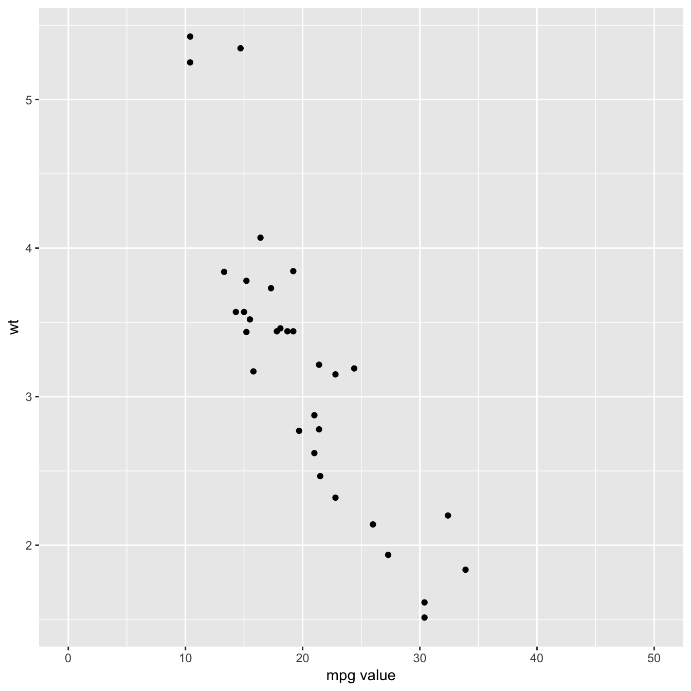
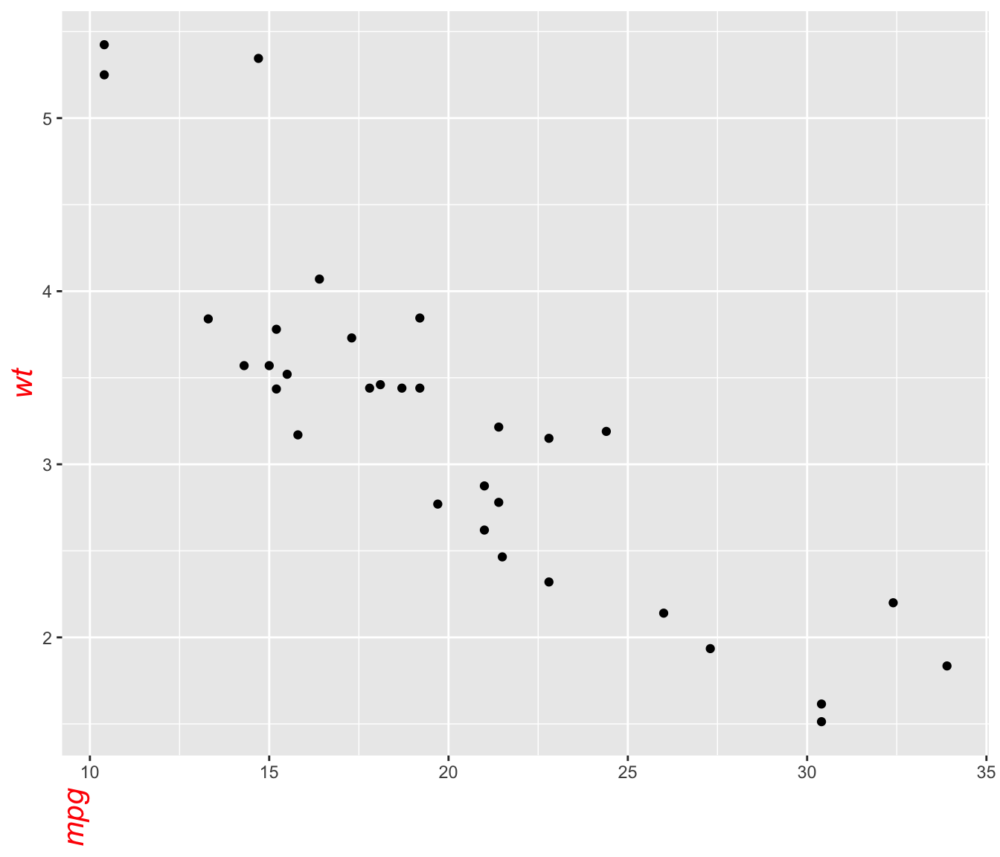
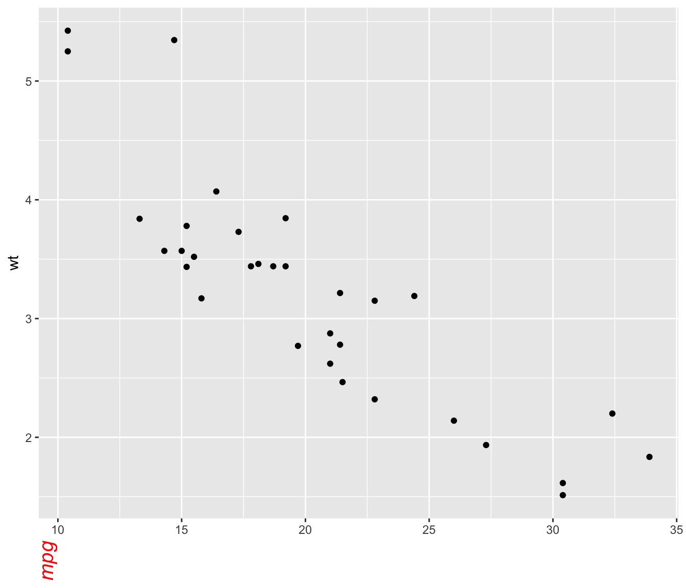
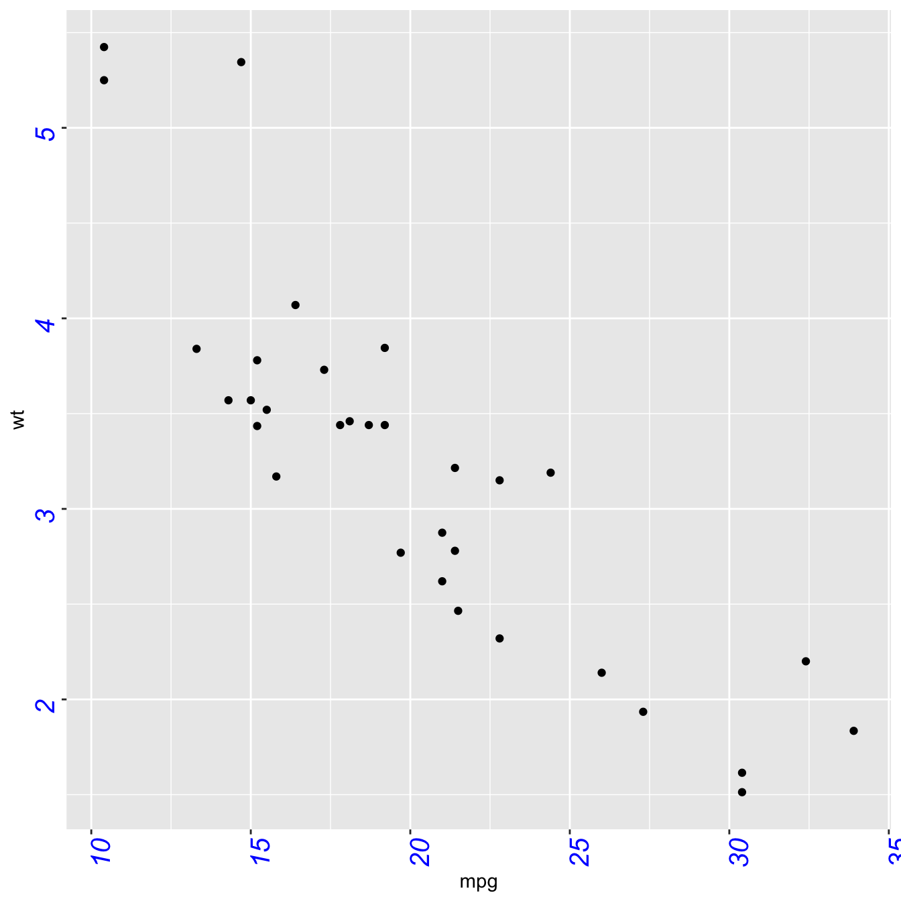
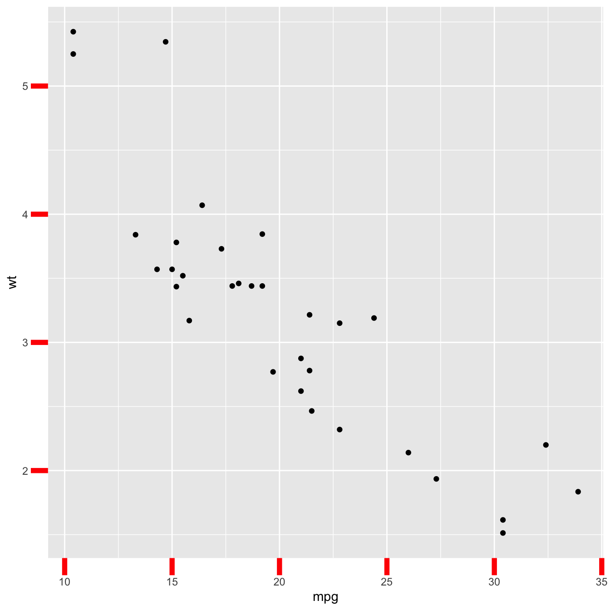
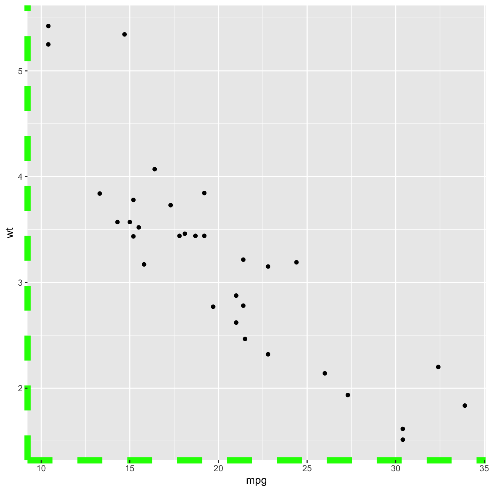
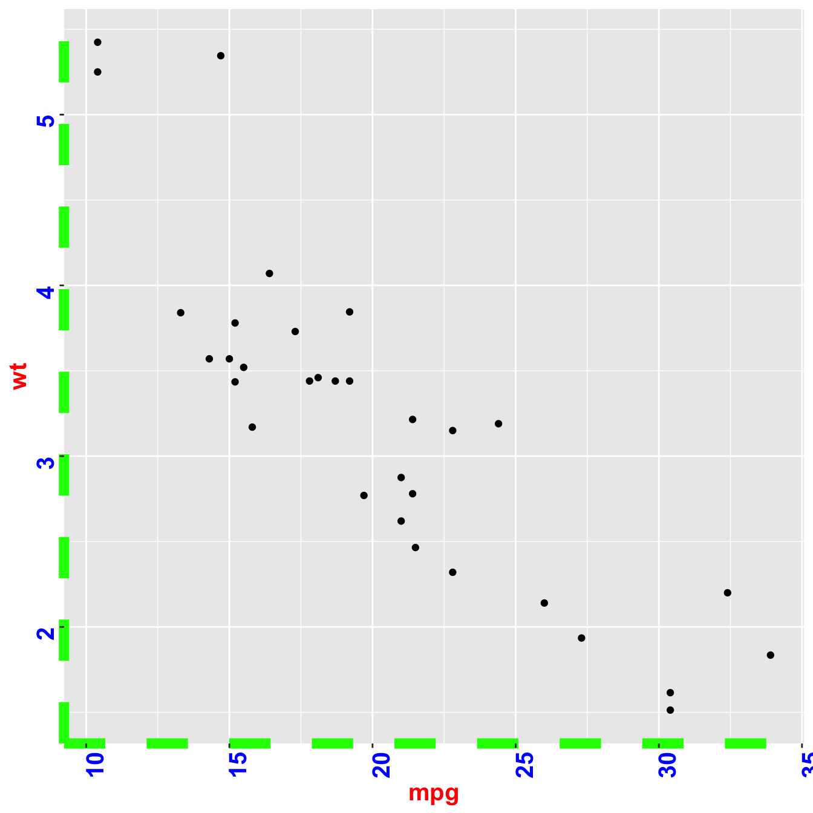

Default ggplot2 axis
Let’s start with a very basic ggplot2
scatterplot. The axis usually looks
very good with default option as you can see here.
Basically two main functions will allow to customize it:
theme()to change the axis appearance-
scale_x_andscale_y_to change the axis type
Let’s see how to use them

# Load ggplot2
library(ggplot2)
# Very basic chart
basic <- ggplot( mtcars , aes(x=mpg, y=wt)) +
geom_point()
basic
Set axis title and limits with xlab() and
xlim()
Two basic options that are used in almost every charts are
xlab() and xlim() to control the axis
title and the axis limits respectively.
Note : it is possible to specify only the lower or upper
bound of a limit. For instance, try xlim(0,NA)

Customize axis title appearance: axis.title


The theme() function allows to customize all parts of the
ggplot2 chart. The axis.title. controls the
axis title appearance. Since it is text, features are wrapped in a
element_text() function. The code below shows how to change
the most common features:
# Left -> both axis are modified
basic + theme(axis.title = element_text( angle = 90, color="red", size=15, face=3)) # face = title location# Right -> only the x axis is modified
basic + theme(axis.title.x = element_text( angle = 90, color="red", size=15, face=3))
Customize axis labels: axis.text
Using pretty much the same process, the
axis.text() function allows to control text label
features. Once more, using axis.text.x() would modify
the x axis only.

Customize axis ticks and axis line with axis.ticks and
axis.line



The axis.ticks() function controls the ticks appearance.
axis.line() controles the axis line. Both of them are
lines, so options are wrapped in a
element_line() statement.
linetype controls the type of line in use, see the
ggplot2 section for more.
# chart 1: ticks
basic + theme(
axis.ticks = element_line(size = 2, color="red") ,
axis.ticks.length = unit(.5, "cm")
)